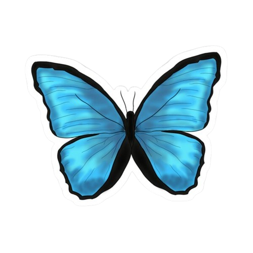
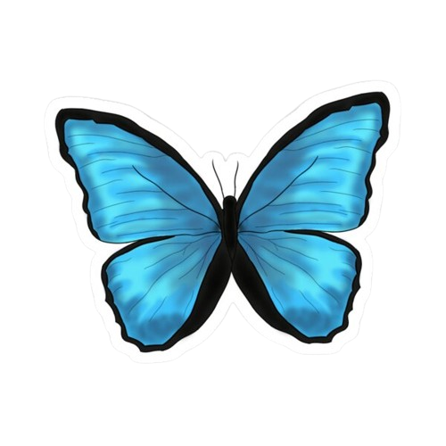

Maxine Caulfield, mais conhecida como Max (nascida em 21 de setembro de 1995), é a protagonista jogável de Life is Strange. Ela é uma aspirante a ser fotógrafa com 18 anos de idade na Blackwell Academy. Ela deixou sua mãe e seu pai em Seattle para voltar à cidade litorânea de Arcadia Bay, Oregon, onde ela cresceu. Depois de salvar sua amiga de infância, Chloe Price, de ser morta por Nathan Prescott em um dos banheiros da escola, ela descobre que possui a habilidade de voltar no tempo e até mesmo de pará-lo. Na busca por pistas para solucionar o misterioso desaparecimento de Rachel Amber, Max deve também descobrir como usar seus poderes para salvar Arcadia Bay de um tornado.
 
